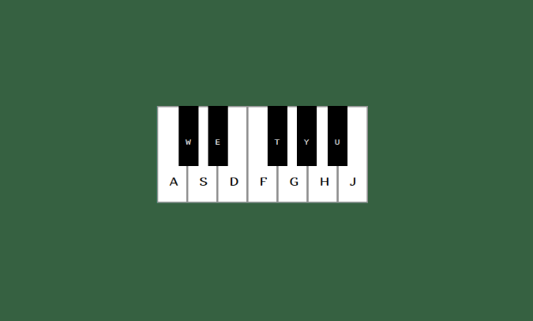
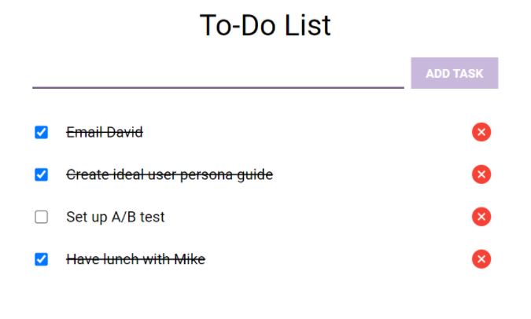
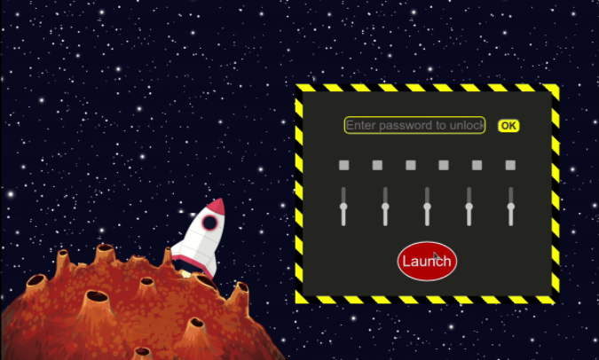
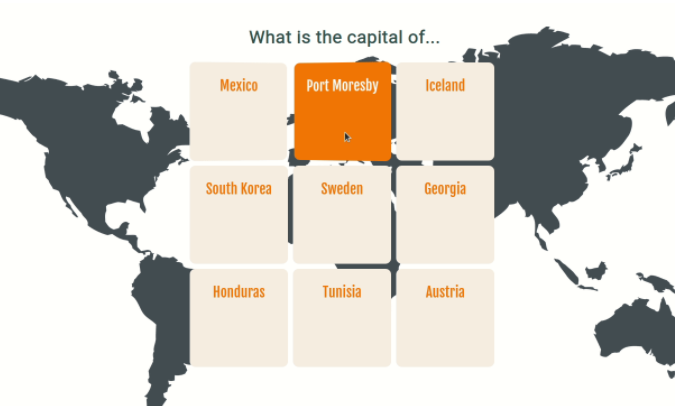

About Me
Nazywam się Patryk Bartz. Jestem absolwentem Państwowej Wyższej Szkoły Zawodowej im. J. A. Komeńskiego w Lesznie, gdzie
uzyskałem tytuł Licencjata. W 2021 roku przyjaciel namówił mnie do nauki programowania, początkowo nie byłem do tego
przekonany, ale postanowiłem spróbować. Moja przygoda rozpoczęła się od prostego kursu pythona, gdzie zapoznałem się z
podstawowymi pojęciami kodowania. Po uzyskaniu takiej wiedzy, wybrałem ścieżkę nauki frontendowca.
Jestem osobą kreatywną, dokładną oraz sumienną. Chcę również podkreślić, że nie boję się wyzwań i z pewnością sprostam wszystkim powierzonym mi zadaniom.
Języki: Html, Css, JavaScript, Python
Jestem osobą kreatywną, dokładną oraz sumienną. Chcę również podkreślić, że nie boję się wyzwań i z pewnością sprostam wszystkim powierzonym mi zadaniom.
Języki: Html, Css, JavaScript, Python
Portfolio




Contacts
Tutaj można mnie znaleźć:
dzankerpl@gmail.com
albo 722 377 570